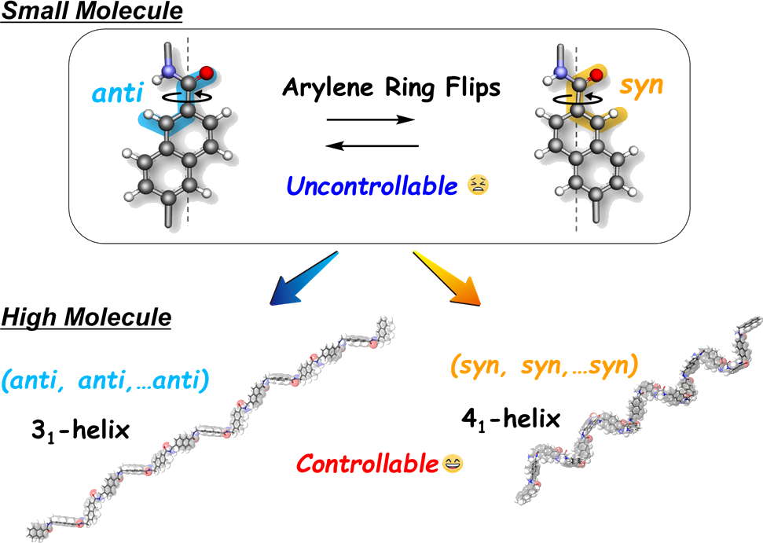
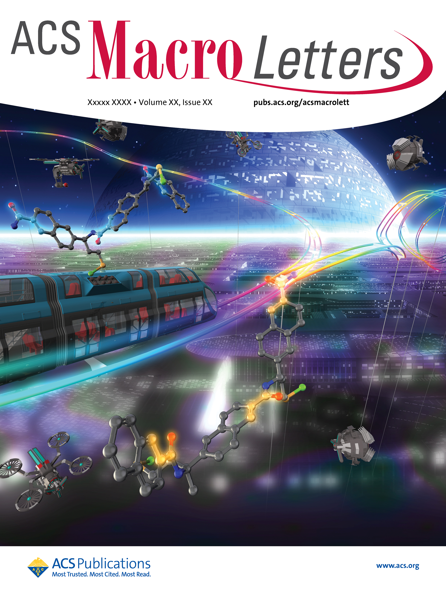

私たちは以前に、不斉重合反応と重合後変換を組み合わせることで、主鎖にpフェニレン骨格が導入されたこれまでにない非天然型ポリペプチドの合成し、それらが溶液中で安定な一方向巻の31らせん構造を形成することを明らかとしている。本研究では、以前に報告した方法を基に2,6-ナフチレン骨格を主鎖に有するポリペプチドを合成したところ、側鎖置換基に応じて73らせんと41らせん構造のどちらかが選択的に形成されることを各種分光測定および理論計算によって明らかとした。このようならせん構造選択性は低分子量体では見られず、高分子効果によって特定の二次構造が誘起されていると考えられる。